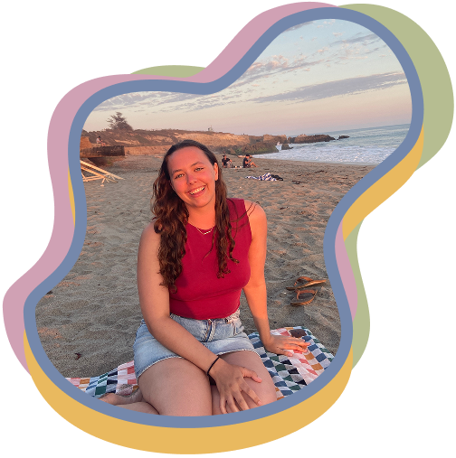
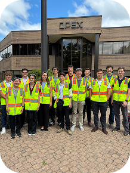
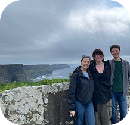
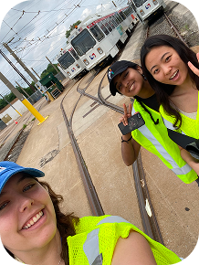

Resume
Profile
HANNAH DESMOND (she/her)
hdesmond913@gmail.com | (818) 618-7456
3417 Race Street, Philadelphia, PA 19104
Drexel University | Graduation June 2027
UX designer with hands-on experience bridging user-centered design and software engineering for complex, real-world systems. Experienced in user research, interaction design, prototyping, and usability validation, with technical skills spanning Figma, Unreal Engine, UMG, and foundational C++. Interested in collaborating closely with engineering teams to build intuitive, reliable products.

Skills
Software:
- Microsoft Office, Google Drive
- Adobe Photoshop, Illustrator, Bridge, After Affects, Audition, and Premiere Pro
- Figma, WordPress
- GitHub and VS Code
- HTML, CSS, JS, PHP, and beginner C++
- Articulate Story Line and Rise 360
- Jira, Plastic, Confluence
- Unreal Engine 5, UMG
UI/UX Design Skills:
- Interaction Design
- Prototyping
- Workflow Design + Reusable UI Components
- Wire Frames + Task Flow Design
- Usability Testing
- Design Theories and Principles
- User Research
- Project Management
Experience

OPEX | Cinnaminson, New Jersey
Warehouse Automation Design Intern, March - September 2026
Supervisor: Rob Gougher | rgougher@opex.com
- Sole UX designer on an HMI development team, leading research, interaction design, prototyping, and validation for the Infinity virtual warehouse system.
- Conducted 25+ user interviews, usability tests, and validation sessions, translating findings into design iterations, functional requirements, and development documentation.
- Self-taught Unreal Engine 5, UMG, Blueprint, and foundational C++ to build functional prototypes and reusable components bridging Figma designs and implementation.
- Led UX for two major workflows, designing complex navigation, version comparison, timeline controls, and recording export through iterative testing.
- Established an accessible HMI color system, centralized Figma design library, and reusable UI components to improve consistency and dev efficiency.

Teneo | Dublin, Ireland
Design Team Intern, April 2025 - August 2025
Supervisor: Karolina Badzmeirowska | karolina.badzmierowska@teneo.com
- Assisted UX team with research and led three user testing sessions. Built out professional wireframes and low fidelity prototypes.
- Conducted UX audits on numerous sites and feeds.
- Conducted competitor social media research on Instagram and LinkedIn.

SEPTA | Philadelphia, PA
Multimedia Designer, April 2024 - September 2024
Supervisor: Dennis Noble | dnoble@septa.org
- Designed and built five e-learning modules and two proofs of concept, contributing to 10+ additional projects.
- Within e-learning modules, assisted with graphic animation, iconography (creating over 250 buttons, with 15 custom designs), UI flow for interactive knowledge quizzes, and assisted with page layout.
- Filmed and edited five 15-minute instructional videos, handling professional equipment, green-screen removal, B-roll, and audio cleanup.
- Developed custom video-buffer animations to enhance instructional videos and e-learning experiences.